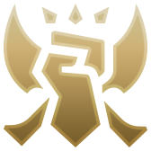

Les positions
Top
La voie du haut est une voie en solo laissant s’exprimer le côté duelliste et solitaire des joueurs. En effet, située au Nord de la Faille, la voie du haut est une ligne isolée des autres voies et de la plupart des objectifs. Ainsi, le “Toplaner” est souvent livré à lui-même et doit savoir créer la différence sans aide extérieure. Néanmoins, la voie du haut peut accueillir un large panel de champions, des tireurs aux assassins en passant par les tanks, même si les tanks - pouvant encaisser les dégâts pour leur équipe et contrôler les champions adverses - et les duellistes - dotés de compétences facilitant les situations de duel et d'une aisance naturelle dans la destruction des objectifs ennemis - restent les champions favorisés par cette voie. On notera que de par sa nature isolé, la téléportation est favorisée comme sort d’invocateur afin de pouvoir rejoindre son équipe rapidement.

Mid
La voie du milieu est sans doute la voie la plus contestée car, étant située au centre de la carte, elle donne accès à tous les objectifs. Ainsi, la voie du milieu se retrouve souvent être le théâtre de combats d’équipe, avec à la clef des objectifs majeurs pour ceux qui s’en sortent victorieux. Comme pour la voie du haut, les joueurs y évoluent en solitaire en préférant néanmoins des assassins mobiles ou des mages, pouvant contrôler efficacement cette zone stratégique.
Bot
Évoluant sur la voie du bas, accompagné par son support, on trouve l’ADC (pour AD Carry, un champion fragile mais pouvant infliger d’important dégâts aux ennemis). C’est un rôle très complexe, notamment à haut niveau, car il se retrouve souvent être la cible principale des adversaires. En effet, lors du milieu et de la fin de la partie, c'est lui qui va infliger le gros des dégâts. Ainsi, l’ADC doit fournir à son équipe un apport de dégâts conséquent tout en restant protégé des offensives ennemies. Les champions privilégiés sont donc les tireurs, voire certains mages statiques.

Support
Accompagnant l’ADC sur la voie du bas, le support a pour rôle de le protéger et de l’accompagner dans tout le début de la partie où l’ADC est très vulnérable. Ainsi la voie du bas se distingue des autres voies par ce format de 2vs2. De plus le support est également le garant de la vision de son équipe, c’est-à-dire qu’il essaye de révéler les champions adverses, afin de pouvoir les anticiper et avoir une longueur d’avance sur eux. Un support privilégiera donc soit un champion défensif pour protéger son ADC, soit un champion plus agressif pour prendre l’avantage sur sa voie.

Jungle
Le rôle de jungler est sans doute le plus complexe à prendre en main. En effet, en plus des adversaires, le joueur doit évoluer dans la jungle, partie située entre les différentes voies, où il devra tuer des monstres neutres afin de gagner de l’expérience et de l’argent, pour compenser le manque de génération naturelle apportée normalement par les vagues de sbires ennemies. En plus, de cela, le rôle principal du jungler est d’aider ses équipiers sur leurs voies en surgissant sur celles-ci pour éliminer le champion adverse par surprise et ainsi prendre l’avantage. À noter que ce rôle contraint le joueur à prendre le sort Châtiment, indispensable pour survivre aux camps de monstres.
Les classes de champion
Avant même de commencer à jouer, vous pouvez mettre en place une stratégie. Que ce soit en sélectionnant des personnages adapté à l’équipe adverse et en ajustant votre composition d’équipe, ou encore en choisissant judicieusement votre “build”, tous les moyens sont bons pour prendre un avantage dès le début.
|  |
Les combattantsBrillants en situation de 1v1, les combattants mettent de la pression sur les "sidelanes" (voie du haut et voie du bas) et forcent l’équipe ennemie à venir à plusieurs sur lui pour en venir à bout. Les combattants peuvent tout de même participer aux combats mais ne sont généralement pas aussi résistants qu’un tank et font moins de dégâts qu’un tireur ou qu’un mage. |
Les magesLes mages sont présents pour faire des dégâts magiques (dits AP pour Ability Power), en général derrière les tanks, ils représentent une grosse partie des dégâts de l’équipe s'ils sont bien protégés, et peuvent contrôler les champions adverses. |
|
Les tireursLes tireurs, à la manière des mages, sont très fragiles mais provoquent beaucoup de dégats, seulement, ils infligent des dégâts physiques (dits AD pour Attack Damage). De manière générale, les combats sont centrés sur eux et la première équipe qui tuera le tireur et le mage adverse remportera le combat. |
|
Les assassinsLes assassins rôdent dans la jungle et surprennent leurs adversaires. Très souvent, ces derniers n’ont pas le temps de les remarquer qu’ils sont déjà morts. Cependant, une fois ses capacités utilisées, les assassins sont très vulnérables et c’est pour cela que jouer assassin est très "quitte ou double". |
|
Les supportsLes supports sont là pour protéger les mages et les tireurs. Avec leurs capacités de soins ou de contrôle de l’ennemi, un champion se faufilant à travers les tanks se fera généralement attraper par le support, ou ce dernier offrira des soins suffisants au tireur et au mage pour pouvoir survivre. |
|
Les tanksLes tanks représentent la première ligne de l’équipe, généralement avec beaucoup de vie et peu de dégâts, ils absorbent les dégâts ennemis et protègent les mages et tireurs qui eux, feront des dégâts. Leurs capacités leurs permettent de résister très longtemps au sein du combat et ainsi, embêter longtemps l’équipe adverse. |